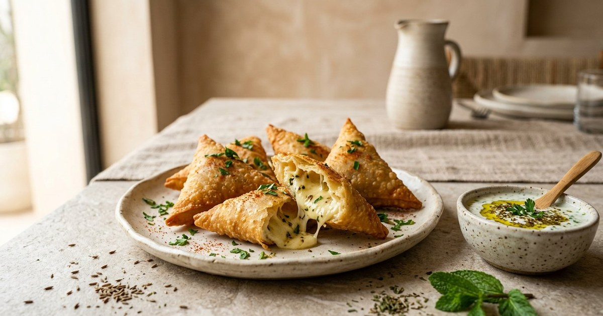

وصفات لذيذة
مناقيش الزعتر: وصفة بيتية سهلة واقتصادية خطوة بخطوة
طريقة مناقيش الزعتر في البيت بمقادير موزونة: عجينة طرية، تخمير صحيح، خلطة زعتر متوازنة وخبز على حرارة مرتفعة.
طريقة عمل سمبوسك الجبن المقرمش: عجينة ذهبية هشة، حشوة الجبن الذائب، القلي والفرن، ونصائح لتجنب التسريب.

صفِّ الجبن الرطب واترك حافة نظيفة حول الحشوة واضغط الإغلاق دون هواء محبوس. البيض ليس ضروريًا دائمًا، خصوصًا إذا كانت الحشوة متماسكة.
في القلي حافظ على حرارة مستقرة ولا تملأ القدر. للفرن ادهن السطح قليلًا واقلب القطع عند الحاجة. اترك الحشوة تبرد قبل التشكيل.
السمبوسك ضيف لا يغيب عن موائد رمضان والعزائم، والجبن الذائب داخله هو ما يجعل الجميع يتزاحم عليه. لكن كثيرين يتجنبونه في البيت خوفًا من عجينة جافة أو جبن يتسرب في القلي. اليوم نكشف أسرار السمبوسك الناجح: عجينة مقرمشة ذهبية، حشوة غنية، وخطوات واضحة للقلي أو الخبز.
اخلط الدقيق والملح، ثم أضف الزيت وافركه بالدقيق حتى يصبح كالرمل الناعم. أضف الماء تدريجيًا واعجن حتى تحصل على عجينة طرية متماسكة لا تلتصق. غطِّها واتركها ترتاح 20-30 دقيقة — الراحة تجعل العجينة مطاوعة وتقبل الفرد بدون تمزق.
اخلط الجبن المبشور مع الزعتر والبقدونس. صفِّ الجبن جيدًا، ويمكن إضافة قليل من النشا إذا بقي رطبًا؛ تقليل الرطوبة وعدم الإفراط في الحشوة أهم لمنع التسرب.
افرد العجينة رقيقة جدًا (سمك 2 مليمتر)، وقطّعها دوائر بكوب أو مربعات بالسكين. ضع ملعقة صغيرة من الحشوة في المنتصف، ادهن الأطراف بالماء أو بمعجون خفيف من الدقيق والماء، وأغلقها على شكل مثلث واضغط الأطراف جيدًا بالشوكة لضمان الالتصاق. التضليع بالشوكة ليس للزينة فقط؛ إنه يقفل الحواف ضد التسريب.
ادهن السمبوسك بالزيت أو البيضة المخفوقة، ورتبه في صينية واخبزه في فرن 200 درجة لمدة 15-18 دقيقة حتى يصبح ذهبيًا. تستخدم هذه الطريقة زيتًا أقل من القلي، لكن النتيجة والقيمة الغذائية تعتمدان على العجينة والحشوة والكمية.
إما لأن الأطراف لم تُقفل جيدًا، أو لأن الحشوة رطبة جدًا. الحل: اضغط الأطراف بالشوكة، وجفف الجبن من الماء قبل الاستخدام، ولا تفرط في الحشوة.
نعم! رتب السمبوسك غير المقلي في صينية مبطنة بورق زبدة وجمّده، ثم انقله لكيس محكم. يقلى مجمدًا مباشرة (لا تذوّبه وإلا تبلل العجينة).
السمبوسك الناجح وصفة سهلة إذا عرفت الأسرار: عجينة ترتاح، حشوة قليلة الرطوبة، أطراف مقفلة بالشوكة، وزيت بدرجة حرارة مضبوطة. حضّر دفعة صغيرة أولًا واضبط سماكة العجين وكمية الحشوة حسب النتيجة.
رُوجعت المعلومات العامة في هذا المقال بالاستناد إلى المصادر التالية. الروابط الخارجية قد تُحدّث محتواها بمرور الوقت.
طريقة مناقيش الزعتر في البيت بمقادير موزونة: عجينة طرية، تخمير صحيح، خلطة زعتر متوازنة وخبز على حرارة مرتفعة.

وصفة شوربة العدس التقليدية خطوة بخطوة: المكونات، طريقة التحضير، أسرار القوام الكريمي والنكهة، وأخطاء شائعة يجب تجنبها.

طريقة عمل كيكة البرتقال الهشة بدون فرن باستخدام القدر: مكونات بسيطة، خطوات واضحة، ونصائح للحصول على كيك رطب وهش.